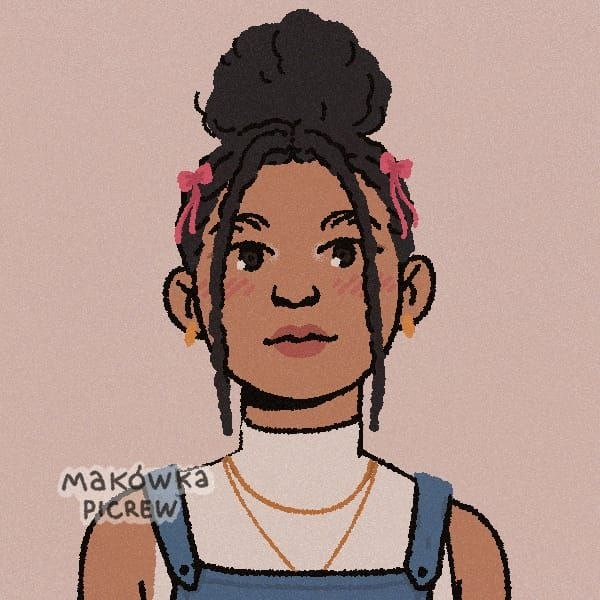
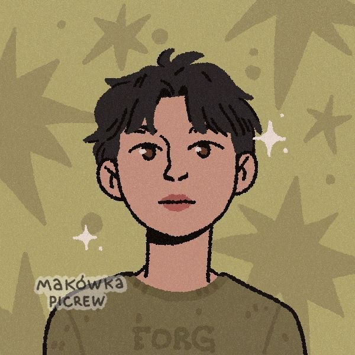
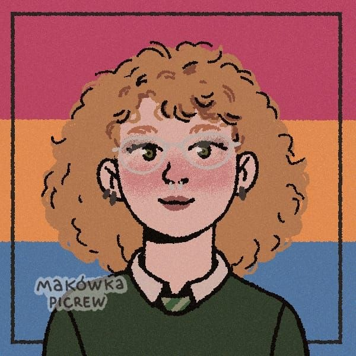
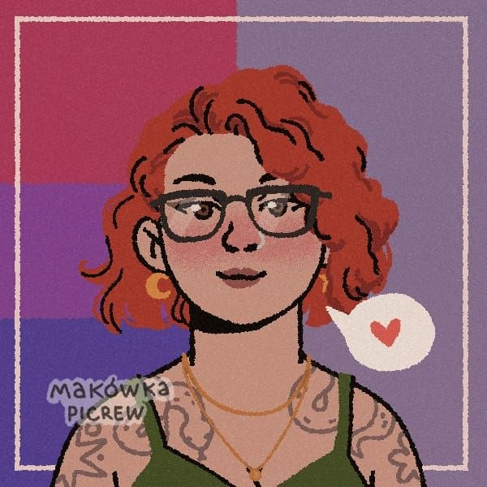

Gincanas Literárias
Maratona de Leitura
Desafios diários de páginas, metas coletivas e premiações especiais para quem mais ler durante as férias.
Jogos em Equipe
Forme seu time e dispute provas de conhecimento literário, caça-palavras e desafios cronometrados.
Caça ao Tesouro Literário
Pistas escondidas pelo grupo, enigmas sobre livros e prêmios para quem decifrar primeiro.
Bingo Literário
Cartela de Bingo
Marque os livros que você já leu ou desafios cumpridos!.
Guardiões da Imaginação




A história do Neverland
Lua · Fundadora
04 de agosto de 2023 · 3 anos de amor literário
O Neverland é um clube do livro digital que eu criei no dia 04 de agosto de 2023. Ele nasceu de um jeito bem simples, sem grandes planos. Na época, eu tinha sido expulsa de um outro grupo de leitura e senti vontade de ter um cantinho onde eu pudesse continuar compartilhando leituras com algumas pessoas que também tinham saído de lá. No começo, eram menos de 10 pessoas, bem pequeno mesmo, só um grupinho.
Com o tempo, as coisas foram acontecendo de forma muito natural. Mais gente foi chegando, as conversas foram crescendo e, quando eu percebi, o Neverland já tinha se tornado algo muito maior do que eu imaginei. Hoje ele é um espaço muito especial, não só pela leitura, mas pelas conexões que a gente criou ali dentro.
Pra mim, o Neverland significa muito. A leitura foi algo que eu fui descobrindo aos poucos e que acabou virando uma paixão enorme. E ter um espaço onde eu posso compartilhar isso com outras pessoas, trocar ideias, conversar sobre tudo e dar risada… é muito importante. Hoje eu realmente não me vejo sem o Never. É um lugar de acolhimento, amizade, aprendizado e leveza.
Sobre a administração, hoje o Neverland é cuidado por mim, pela Amanda, pela Kath e pelo João. Eu sou a Lua, a fundadora, e apesar de não ter muita prática com organização, eu sempre tento ajudar como posso. A gente tem, por exemplo, a nossa gincana de férias, que acontece geralmente entre dezembro e fevereiro, com jogos, maratonas literárias, bingo e várias atividades em equipe.
A Amanda também está sempre junto, me ajudando e apoiando em tudo. O João é o nosso ADM mais novo, entrou na direção em 2026, e hoje ele é essencial principalmente na parte de design. A Kath está comigo desde o começo, desde o início da direção. Ela é a administradora mais antiga junto comigo e está sempre presente em tudo.
Eu tenho muita gratidão por todos eles, porque sinceramente, sozinha eu não conseguiria manter o Neverland do jeito que ele é hoje. Em agosto de 2026, o Neverland completa 3 anos, e pra mim isso é muito significativo. É a prova de tudo que a gente construiu juntos. Eu amo esse lugar de todo o meu coração.
Livro do Mês

🪟 Uma Janela Sombria
Rachel Gilling
Em uma mansão envolta por névoas eternas, Lena descobre uma janela que só aparece nas noites de lua nova. Do outro lado, um mundo sombrio reflete seus medos mais profundos — e a única saída é enfrentar verdades que ela mesma esqueceu. Mistério psicológico e atmosfera única.
Desafio Literário - 2025

De Ferias com Você - Emily Henry
JANEIRO
Os Garotos do Cemitério - Aiden Thomas
FEVEREIRO
O Livro das Portas - Gareth Brown
MARÇO
O Massacre da Família Hope - Riley Sager
ABRIL
A Extraordinária Cozinha dos Livros - Kim Jee-Hye
MAIO
Meu Assassinato - Katie Williams
JUNHO
Sem Coração - Marissa Meyer
JULHO/AGOSTO
Nossos Eternos Destinos - Colleen Hoover
SETEMBRO/OUTUBRO
Enrolada em Você - Colleen Hoover
NOVEMBRO/DEZEMBROO que a comunidade diz
— Luh.
— Julia.
— Ramon.
— Suh.
NEVERLAND · O seu refúgio

🪟 O lugar que você tem buscado
para ser o seu refúgio
╭── ⋆ ࣪.📖⊹ ┈┈┈┈┈┈┈──────────╮
⋆₊˚. NᥱʋᥱɾꙆᥲᥒᑯ ⋆₊˚.
· · A BɩᑲꙆɩotᥱᥴᥲ Pᥱɾᑯɩᑯᥲ · ·
Oᥙçᥲ o ᥴhᥲmᥲdo dᥲs fᥲdᥲs ᥱ ᥲvᥱᥒtᥙrᥱ-sᥱ ᥱm mᥱιo ᥲos ᥣᥙgᥲrᥱs mᥲ́gιᥴos
ρroρorᥴιoᥒᥲdos ᥲtrᥲvᥱ́s dᥲ ᥣᥱιtᥙrᥲ.
Sᥱ forᥱs dιgᥒo dᥱ mᥱrgᥙᥣhᥲr ᥒo mᥲιs ρrofᥙᥒdo oᥴᥱᥲᥒo ᥱ ᥲtᥱ́ fᥣᥙtᥙᥲr ᥒᥲ mᥲιs ᥲᥣtᥲ ᥒᥙvᥱm,
ᥴomo os soᥒhᥲdorᥱs, ᥱᥒᥴoᥒtrᥱ ᥲs ᥴrιᥲᥒᥴ̧ᥲs ρᥱrdιdᥲs.
✨ · Sᥱgᥙᥒdᥲ ᥱstrᥱᥣᥲ mᥲιs brιᥣhᥲᥒtᥱ, ᥲ̀ dιrᥱιtᥲ, ᥱ dιrᥱto ᥲtᥱ́ o ᥲmᥲᥒhᥱᥴᥱr.
🔗 Link convite: https://chat.whatsapp.com/GL7T5qFeynjDPTfeFtiM0r